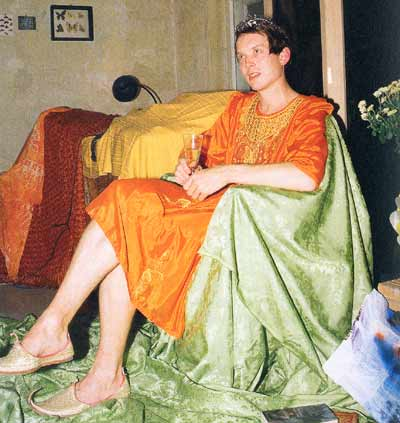
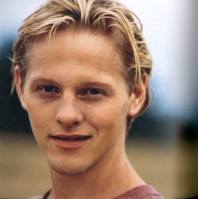

|
||
| Forfatterne Lars Erik Frank og Minna Grooss har interviewet
tretten homoer, der lever i Danmark. Det er der kommet en bog ud af. Midt
i november udkommer HOMO på Politikens Forlag. De medvirkende i HOMO varierer i køn, alder, bopæl, klasse og etnicitet. Med andre ord: De er meget forskellige og afspejler forskellige måder at leve homoseksuelt på. Fra landmanden Marinus Voets på 52 i en landsby ved Varde over den pensionerede sygehjælper Bennie Clement i København K til hiv- og aidspræsten Carina Wøhlk. Men en alsidig homobog i 2003 vil selvfølgelig også have forbindelse til dunst.  Det giver næsten sig selv i et uddybende interview hvor miss fish/ Jørgen Callesen fortæller om sit liv før og efter, i og udenfor dunst. Blandt meget andet: ”Det er også i dunst, at miss fish som figur har taget konkret form og er blevet til mere end tanker og analyser. Og dunst og hele miljøet omkring er klart en af grundene til at jeg nu kan holde ud at være i København. Oven på at homoerne fik det registrerede partnerskab og blev meget stille og borgerlige, har vi vist, at man godt kan skabe nye fællesskaber, der er grænsesøgende. Det er lykkedes os at skabe en ny kultur.” Som homoseksuelle der påkalder sig særlig respekt placerer miss fish i øvrigt Ramona Macho og Dennis Agerblad side om side med Quentin Crisp. DJ Maria som tit viber op i dunst beretter om sig selv og sine tanker i et dobbeltinterview med Ross Nøss Bendixen. De to er de hårde nitter som lancerede lesbisk tombola ved LeFreak-festen i Ungdomshuset sidste år. På spørgsmålet om hvornår hun sætter mest pris på at være homo, svarer Rosa: ”Når jeg for eksempel ser miss fish fra dunst i en gennemsigtig toga, bare fødder og udtværet makeup. Når jeg møder en lebbe, der har heddet Jacob som barn. Eller når min femme-veninde for tyvende gang insisterer på at vis sit halvtredser-undertøj, som hun har på til en fest.”  Skuespiller Thure Lindhardt har følgende hyldest til dunst med i sit interview: ”Jeg vil til enhver tid foretrække noget mere anarkistisk som den fest, dunst holdt i Ungdomshuset på Jagtvej i København. Det var trashet, men samtidigt stiligt. Og alle var der. Det var ikke bare designbøsser eller dieseldykes, men alle mulige typer og i alle mulig aldre, med eller uden paryk. Det er fedt. [.....] Musikmæssigt blev der også kigget i andre retninger og skabt forskellige stemninger i stedet for at gøre ligesom alle andre gør, nemlig bare at lade tingene flyde ud i mainstream.” I en billedserie først i HOMO - et slags homoseksuelt blik på verden – optræder et par dunst-flyers sammen med løbesedler, lesbisk porno, privatbilleder, presse- og kunstfotografier af bl.a. Martin Parr, Elmgreen/Dragset og Wolfgang Tillmans HOMO’s ene forfatter Lars Erik Frank er urdunster. Han var med da dunst sad og fedtede med foreningsparagraffer og medlemskontingenter og lånte lokaler i Dybbølsgade. HOMO af Lars Erik Frank og Minna Grooss Politiken Omfang: 252 sider Pris: kr. 249,- Udkom 14. november 2003 www.politikensforlag.dk (Køb den også online) |
||
|
Print denne side |